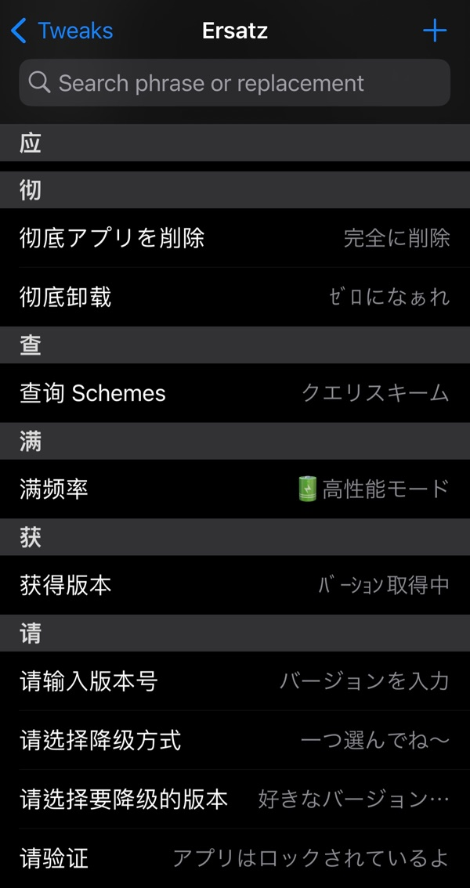
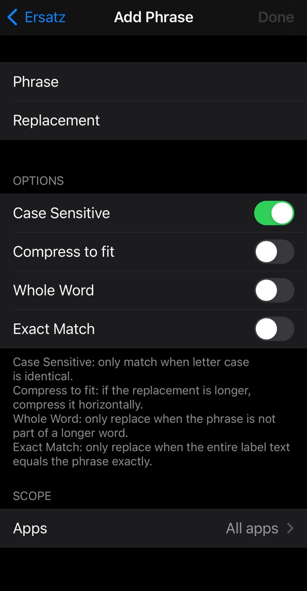
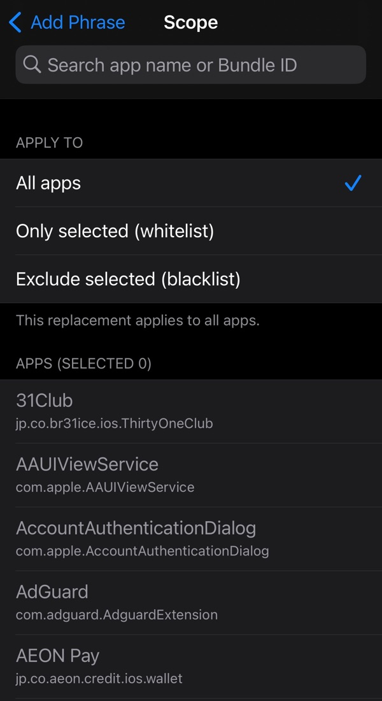

Ersatz Reborn
com.imodcommission.ersatz · 2.3.1



Replace any text, system-wide!
Fork of Ersatz by Skitty, updated for roothide and extended.
Features:
| Version | 2.3.1 |
| Architectures | iphoneos-arm64e |
| Author | Skitty, TweakDev22, imod_commission |
| Section | Tweaks |
| License | Free |
jbroot/var/mobile/Library/Logs/Ersatz.log